pacman::p_load(ggrepel, patchwork,
ggthemes, hrbrthemes,
tidyverse) Hands-on Exercise 2
2.2 Getting started
2.2.1 Installing and loading the required libraries
In this exercise, beside tidyverse, four R packages will be used. They are:
ggrepel: an R package provides geoms for ggplot2 to repel overlapping text labels.
ggthemes: an R package provides some extra themes, geoms, and scales for ‘ggplot2’.
hrbrthemes: an R package provides typography-centric themes and theme components for ggplot2.
patchwork: an R package for preparing composite figure created using ggplot2.
Code chunk below will be used to check if these packages have been installed and also will load them onto your working R environment.
2.2.2 Importing data
For the purpose of this exercise, a data file called Exam_data will be used. It consists of year end examination grades of a cohort of primary 3 students from a local school. It is in csv file format.
The code chunk below imports exam_data.csv into R environment by using read_csv() function of readr package. readr is one of the tidyverse package.
exam_data <- read_csv("data/Exam_data.csv")Rows: 322 Columns: 7
── Column specification ────────────────────────────────────────────────────────
Delimiter: ","
chr (4): ID, CLASS, GENDER, RACE
dbl (3): ENGLISH, MATHS, SCIENCE
ℹ Use `spec()` to retrieve the full column specification for this data.
ℹ Specify the column types or set `show_col_types = FALSE` to quiet this message.There are a total of seven attributes in the exam_data tibble data frame. Four of them are categorical data type and the other three are in continuous data type.
The categorical attributes are: ID, CLASS, GENDER and RACE. The continuous attributes are: MATHS, ENGLISH and SCIENCE.
2.3 Beyond ggplot2 Annotation: ggrepel
One of the challenge in plotting statistical graph is annotation, especially with large number of data points.
ggplot(data=exam_data,
aes(x= MATHS,
y=ENGLISH)) +
geom_point() +
geom_smooth(method=lm,
size=0.5) +
geom_label(aes(label = ID),
hjust = .5,
vjust = -.5) +
coord_cartesian(xlim=c(0,100),
ylim=c(0,100)) +
ggtitle("English scores versus Maths scores for Primary 3")Warning: Using `size` aesthetic for lines was deprecated in ggplot2 3.4.0.
ℹ Please use `linewidth` instead.`geom_smooth()` using formula = 'y ~ x'
ggrepel is an extension of ggplot2 package which provides geoms for ggplot2 to repel overlapping text as in our examples on the right. We simply replace geom_text() by geom_text_repel() and geom_label() by geom_label_repel. 2.3.1 Working with ggrepel
ggplot(data=exam_data,
aes(x= MATHS,
y=ENGLISH)) +
geom_point() +
geom_smooth(method=lm,
size=0.5) +
geom_label_repel(aes(label = ID),
fontface = "bold") +
coord_cartesian(xlim=c(0,100),
ylim=c(0,100)) +
ggtitle("English scores versus Maths scores for Primary 3")`geom_smooth()` using formula = 'y ~ x'Warning: ggrepel: 317 unlabeled data points (too many overlaps). Consider
increasing max.overlaps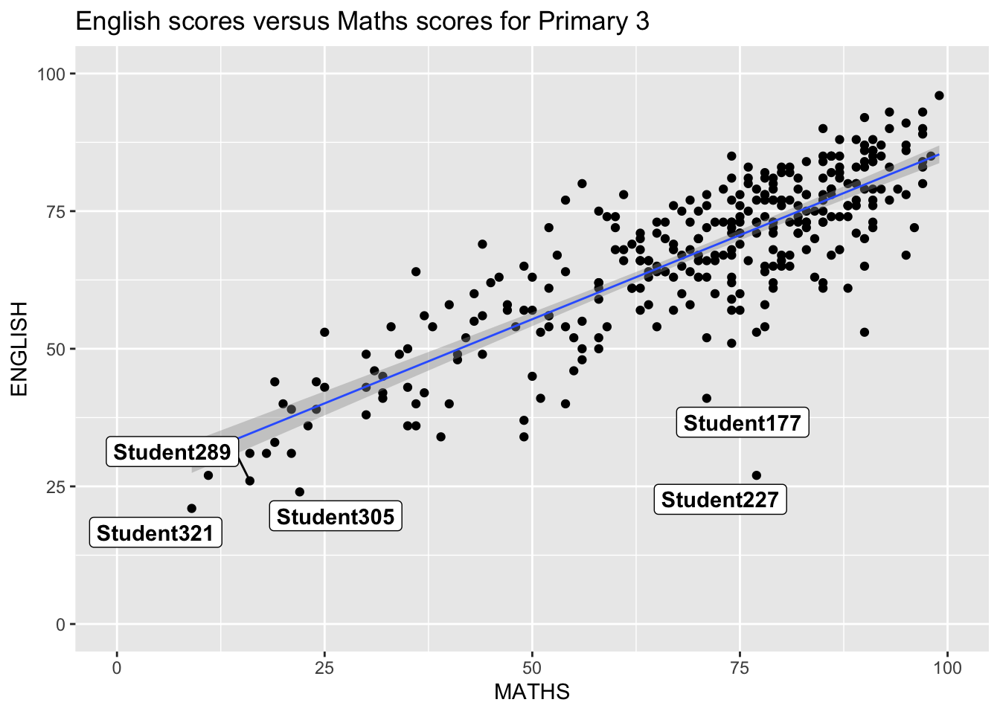
2.4 Beyond ggplot2 Themes
Beyond ggplot2 Themes and chosen suggestions ggplot2 comes with eight built-in themes, they are: theme_gray(), theme_bw(), theme_classic(), theme_dark(), theme_light(), theme_linedraw(), theme_minimal(), and theme_void().
ggplot(data=exam_data,
aes(x = MATHS)) +
geom_histogram(bins=20,
boundary = 100,
color="grey25",
fill="grey90") +
theme_gray() +
ggtitle("Distribution of Maths scores") 
Here I selected a few classic themes for selection as the followings show,you can select whatever you like and which is applicable under each situation: theme_bw(): Cleaner background, suitable for academic reports/printing theme_minimal(): More concise, highlighting data shapes theme_dark(): Dark background, suitable for presentations or nighttime displays (but not print-friendly)
p <- ggplot(exam_data, aes(x = MATHS)) +
geom_histogram(bins = 20, boundary = 100, color = "grey25", fill = "grey90") +
ggtitle("Distribution of Maths scores")
p + theme_bw()
p + theme_minimal()
p + theme_classic()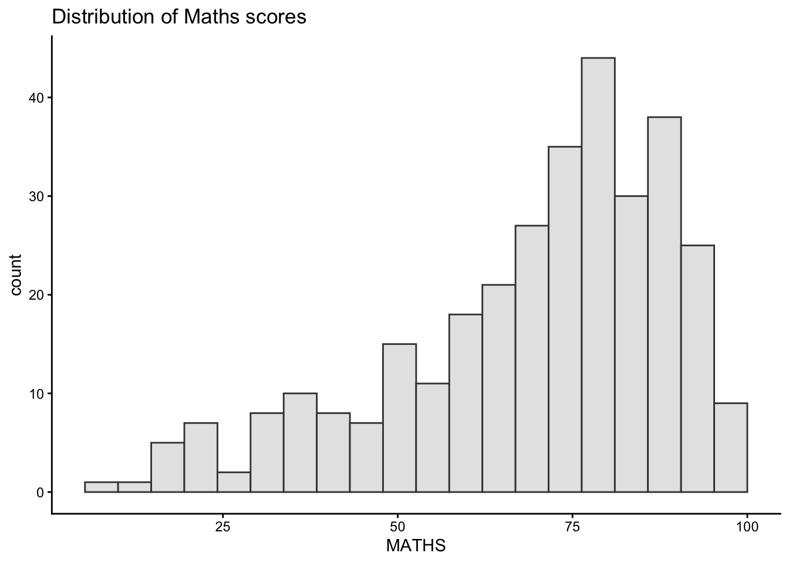
Despite the different themes used, the underlying data representation remains unchanged.In univariate histograms, the visual differences are subtle because the themes primarily affect non-data elements such as the background, grid lines, and axis styles. In this example, the visual differences between theme_bw(), theme_minimal(), and theme_classic() are subtle,because the plot contains only one variable and has no legend.This demonstrates that ggplot2 themes modify non-data elements without affecting the data itself.
2.4.1 Working with ggtheme package
ggthemes provides ‘ggplot2’ themes that replicate the look of plots by Edward Tufte, Stephen Few, Fivethirtyeight, The Economist, ‘Stata’, ‘Excel’, and The Wall Street Journal, among others. In the example below, The Economist theme is used.
ggplot(data=exam_data,
aes(x = MATHS)) +
geom_histogram(bins=20,
boundary = 100,
color="grey25",
fill="grey90") +
ggtitle("Distribution of Maths scores") +
theme_economist()
Or you can choose other ones like Theme Calc as shows in example,just shows it has lots of choices.
ggplot(data=exam_data,
aes(x = MATHS)) +
geom_histogram(bins=20,
boundary = 100,
color="grey25",
fill="grey90") +
ggtitle("Distribution of Maths scores") +
theme_calc()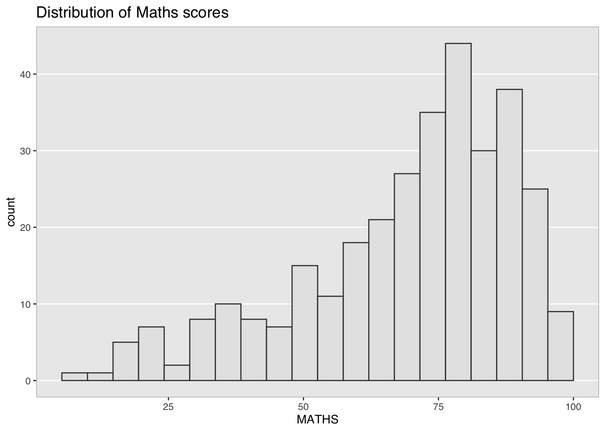
It also provides some extra geoms and scales for ‘ggplot2’. Consult this vignette to learn more. Let’s use theme_solarized as the example.
ggplot(data = exam_data,
aes(x = MATHS)) +
geom_histogram(bins = 20,
boundary = 100,
color = "grey25",
fill = "grey90") +
ggtitle("Distribution of Maths scores") +
theme_solarized()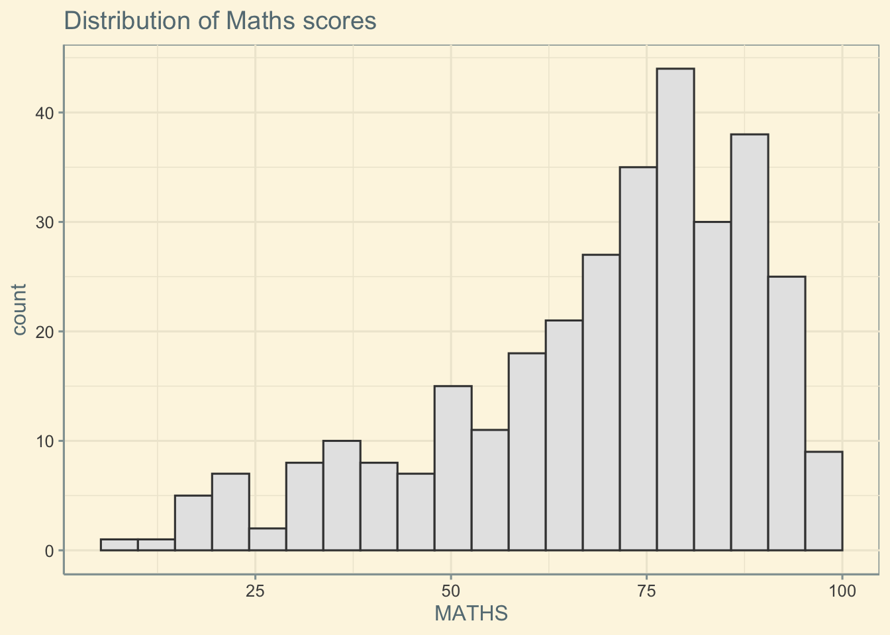
Furthermore,ggplot2 supports Solarized-based color schemes through external themes and scaling functions which looks more understandable and eye-catching.
ggplot(data = exam_data,
aes(x = MATHS, fill = "MATHS")) +
geom_histogram(bins = 20,
boundary = 100,
color = "grey25") +
ggtitle("Distribution of Maths scores") +
theme_solarized() +
scale_fill_solarized("blue")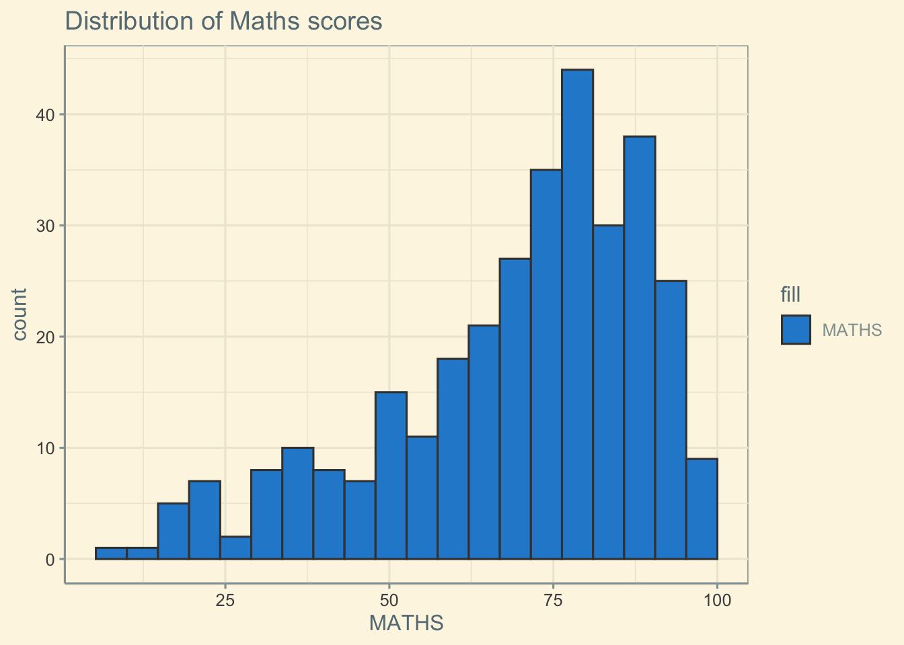
2.4.2 Working with hrbthems package
hrbrthemes package provides a base theme that focuses on typographic elements, including where various labels are placed as well as the fonts that are used.
ggplot(data=exam_data,
aes(x = MATHS)) +
geom_histogram(bins=20,
boundary = 100,
color="grey25",
fill="grey90") +
ggtitle("Distribution of Maths scores") +
theme_ipsum()
The second goal centers around productivity for a production workflow. In fact, this “production workflow” is the context for where the elements of hrbrthemes should be used. Consult this vignette to learn more.
ggplot(data=exam_data,
aes(x = MATHS)) +
geom_histogram(bins=20,
boundary = 100,
color="grey25",
fill="grey90") +
ggtitle("Distribution of Maths scores") +
theme_ipsum(axis_title_size = 18,
base_size = 15,
grid = "Y")
What can we learn from the code chunk above? 1.axis_title_size argument is used to increase the font size of the axis title to 18 2.base_size argument is used to increase the default axis label to 15 3.grid argument is used to remove the x-axis grid lines
2.5 Beyond Single Graph
It is not unusual that multiple graphs are required to tell a compelling visual story. There are several ggplot2 extensions provide functions to compose figure with multiple graphs. In this section, you will learn how to create composite plot by combining multiple graphs. First, let us create three statistical graphics by using the code chunk below.
p1 <- ggplot(data=exam_data,
aes(x = MATHS)) +
geom_histogram(bins=20,
boundary = 100,
color="grey25",
fill="grey90") +
coord_cartesian(xlim=c(0,100)) +
ggtitle("Distribution of Maths scores")
p1
Next
p2 <- ggplot(data=exam_data,
aes(x = ENGLISH)) +
geom_histogram(bins=20,
boundary = 100,
color="grey25",
fill="grey90") +
coord_cartesian(xlim=c(0,100)) +
ggtitle("Distribution of English scores")
p2
Lastly, we will draw a scatterplot for English score versus Maths score by as shown below
p3 <- ggplot(data=exam_data,
aes(x= MATHS,
y=ENGLISH)) +
geom_point() +
geom_smooth(method=lm,
size=0.5) +
coord_cartesian(xlim=c(0,100),
ylim=c(0,100)) +
ggtitle("English scores versus Maths scores for Primary 3")
p3`geom_smooth()` using formula = 'y ~ x'
2.5.1 Creating Composite Graphics: pathwork methods
There are several ggplot2 extension’s functions support the needs to prepare composite figure by combining several graphs such as grid.arrange() of gridExtra package and plot_grid() of cowplot package. In this section, I am going to shared with you an ggplot2 extension called patchwork which is specially designed for combining separate ggplot2 graphs into a single figure.
Patchwork package has a very simple syntax where we can create layouts super easily. Here’s the general syntax that combines:
Two-Column Layout using the Plus Sign + Parenthesis () to create a subplot group Two-Row Layout using the Division Sign /
2.5.2 Combining two ggplot2 graphs
Figure in the tabset below shows a composite of two histograms created using patchwork. Note how simple the syntax used to create the plot!
p1 + p2
2.5.3 Combining three ggplot2 graphs
We can plot more complex composite by using appropriate operators. For example, the composite figure below is plotted by using:
“/” operator to stack two ggplot2 graphs
“|” operator to place the plots beside each other
“()” operator the define the sequence of the plotting.
(p1 / p2) | p3`geom_smooth()` using formula = 'y ~ x'
Here comes with the problem that p3’s title cannot be fully seen in this case, so to solve this, I use .
p1 <- p1 + labs(title = "Distribution of\nMaths scores")
p2 <- p2 + labs(title = "Distribution of\nEnglish scores")
p3 <- p3 + labs(title = "English scores\nversus Maths scores")
(p1 / p2) | p3`geom_smooth()` using formula = 'y ~ x'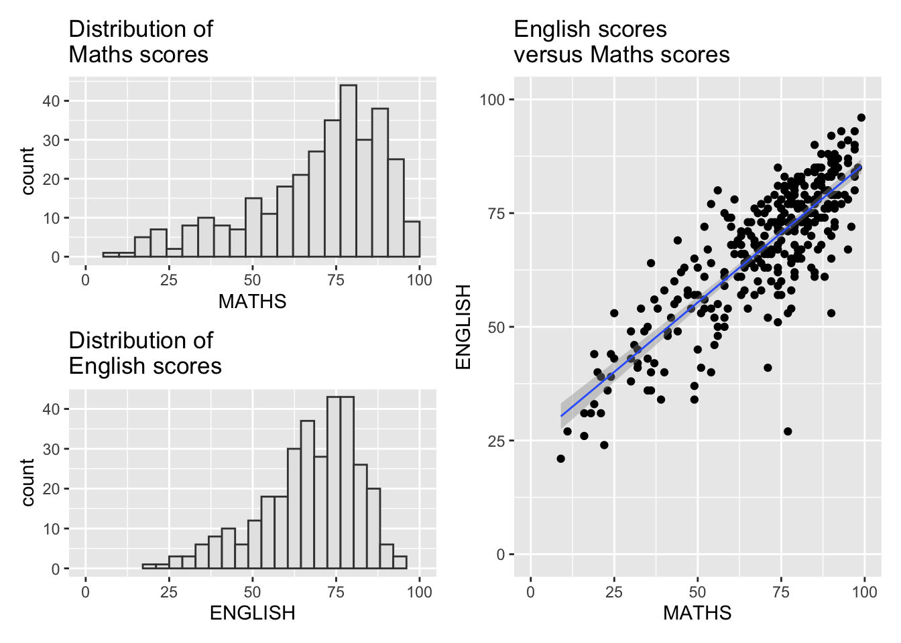
2.5.4 Adding panels
Panels for p1p2p3 are shown but it is not suggested since the words are intersect.To solve this, use.
library(patchwork)
p1 <- p1 + labs(title = "Distribution of\nMaths scores")
p2 <- p2 + labs(title = "Distribution of\nEnglish scores")
p3 <- p3 + labs(title = "English scores\nversus Maths scores")
p1 | p2 | p3`geom_smooth()` using formula = 'y ~ x'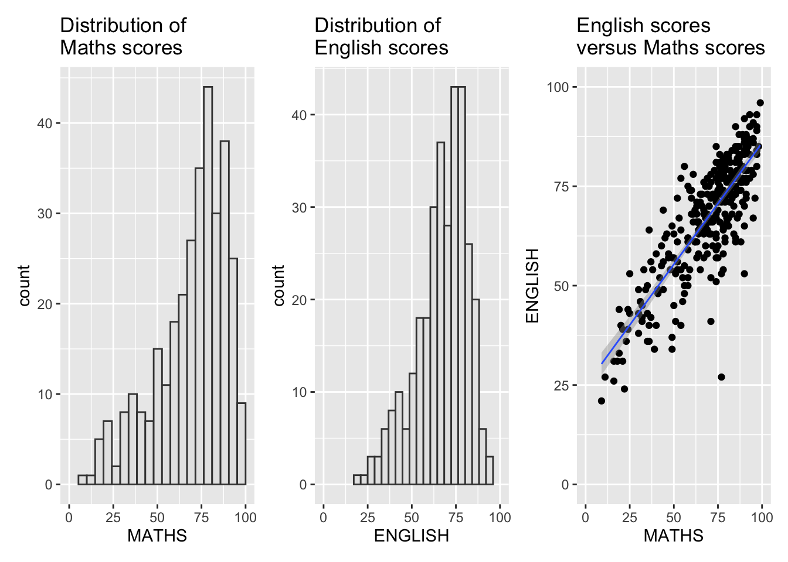
But can still try to combine with the themes like examples.
p1 + theme_bw() |
p2 + theme_minimal() |
p3 + theme_classic()`geom_smooth()` using formula = 'y ~ x'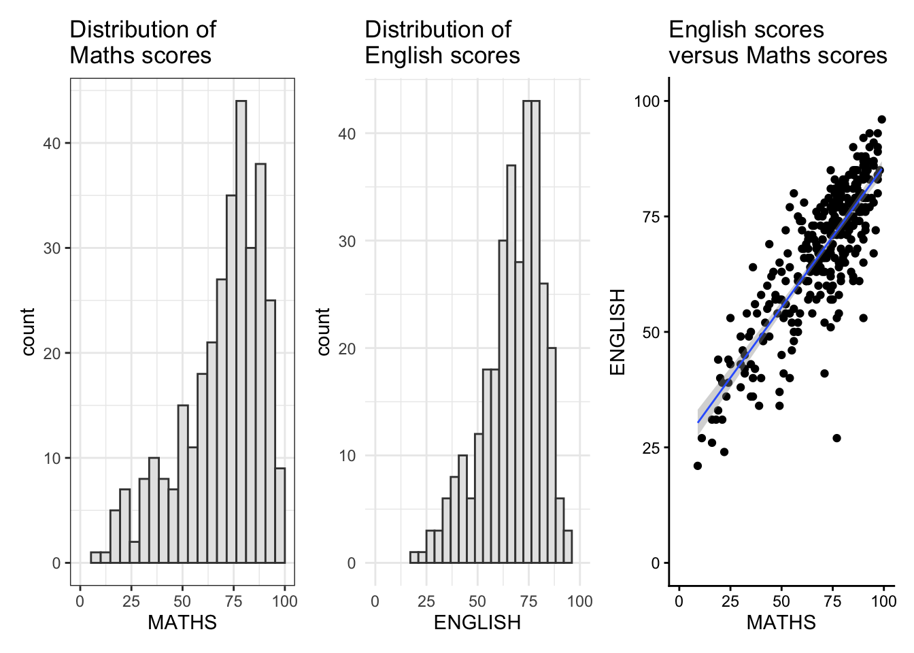
2.5.5 Creating a composite figure with tag
In order to identify subplots in text, patchwork also provides auto-tagging capabilities as shown in the figure below.
p1 <- p1 + labs(title = "Distribution of\nMaths scores")
p2 <- p2 + labs(title = "Distribution of\nEnglish scores")
p3 <- p3 + labs(title = "English scores\nversus Maths scores")
((p1 / p2) | p3) +
plot_annotation(tag_levels = 'I')`geom_smooth()` using formula = 'y ~ x'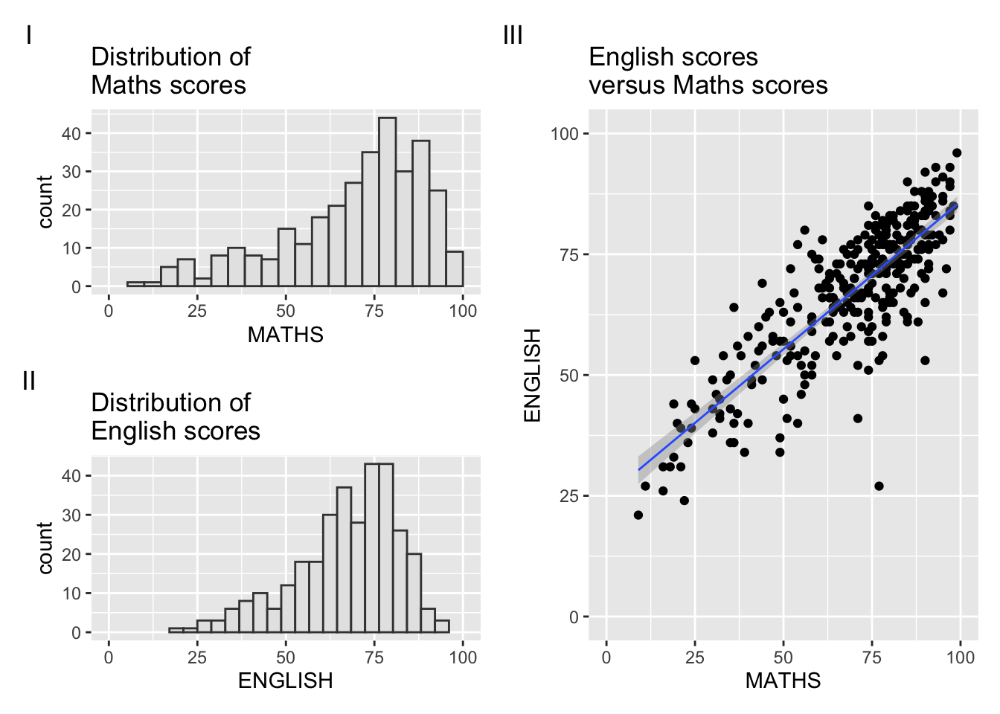
2.5.6 Creating figure with insert
Beside providing functions to place plots next to each other based on the provided layout. With inset_element() of patchwork, we can place one or several plots or graphic elements freely on top or below another plot.
p3 + inset_element(p2,
left = 0.02,
bottom = 0.7,
right = 0.5,
top = 1)`geom_smooth()` using formula = 'y ~ x'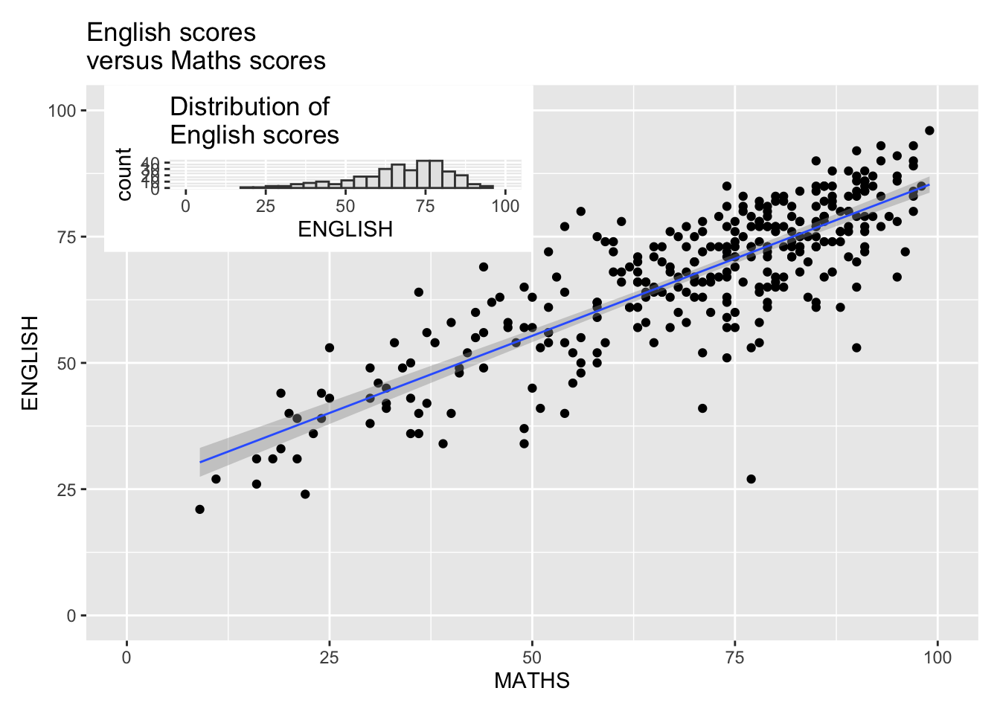
2.5.7 Creating a composite figure by using patchwork and ggtheme
Figure below is created by combining patchwork and theme_economist() of ggthemes package discussed earlier.
p1 <- p1 + labs(title = "Distribution of\nMaths scores")
p2 <- p2 + labs(title = "Distribution of\nEnglish scores")
p3 <- p3 + labs(title = "English scores\nversus Maths scores")
patchwork <- (p1 / p2) | p3
patchwork & theme_economist()`geom_smooth()` using formula = 'y ~ x'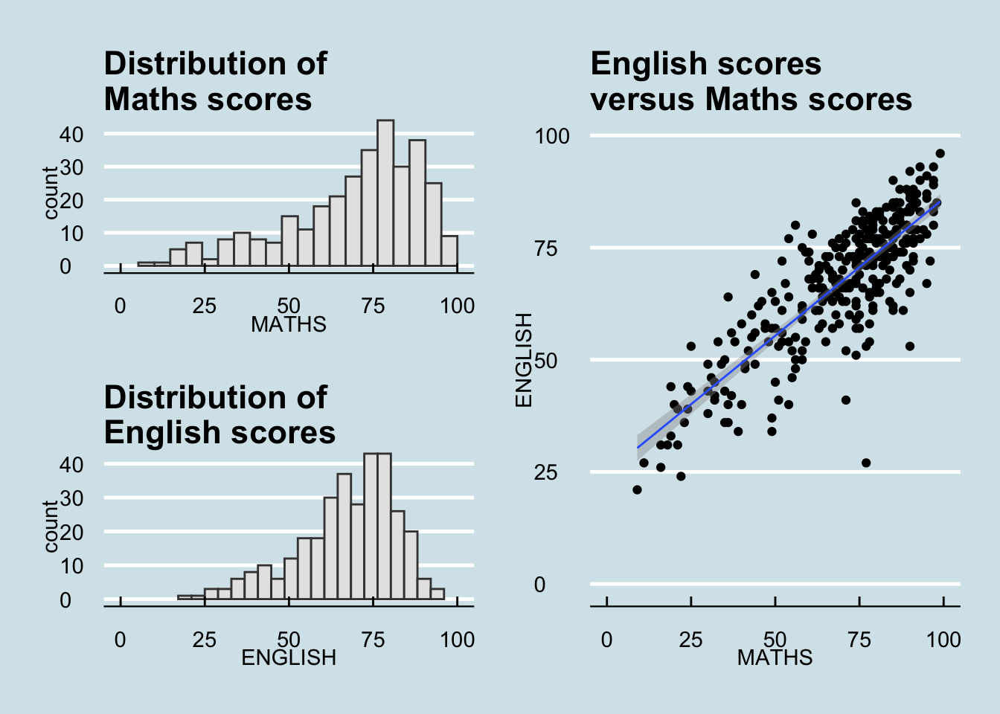
2.5.8 Creating a composite figure by using geoms
If you want to change the geom of p1p2 into violin instead of histogram, then p3 changes into density instead of scatterplot.(just the example of using geom combined figure, please don’t care about the reasons why to change into the figure)
p1 <- p1 + labs(title = "Maths scores")
p2 <- p2 + labs(title = "English scores")
p3 <- p3 + labs(title = "English scores\nversus Maths scores")
p1_violin <- ggplot(exam_data, aes(x = "", y = MATHS)) +
geom_violin()
p2_violin <- ggplot(exam_data, aes(x = "", y = ENGLISH)) +
geom_violin()
p3_density <- ggplot(exam_data, aes(x = MATHS, y = ENGLISH)) +
geom_density_2d()
p1_violin | p2_violin | p3`geom_smooth()` using formula = 'y ~ x'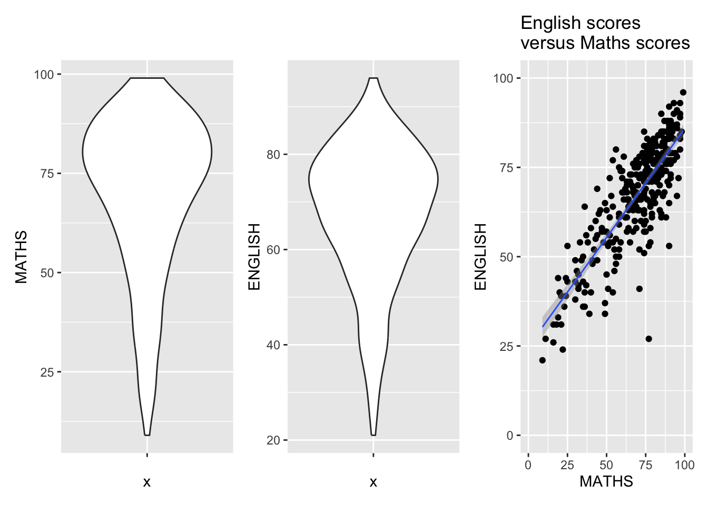